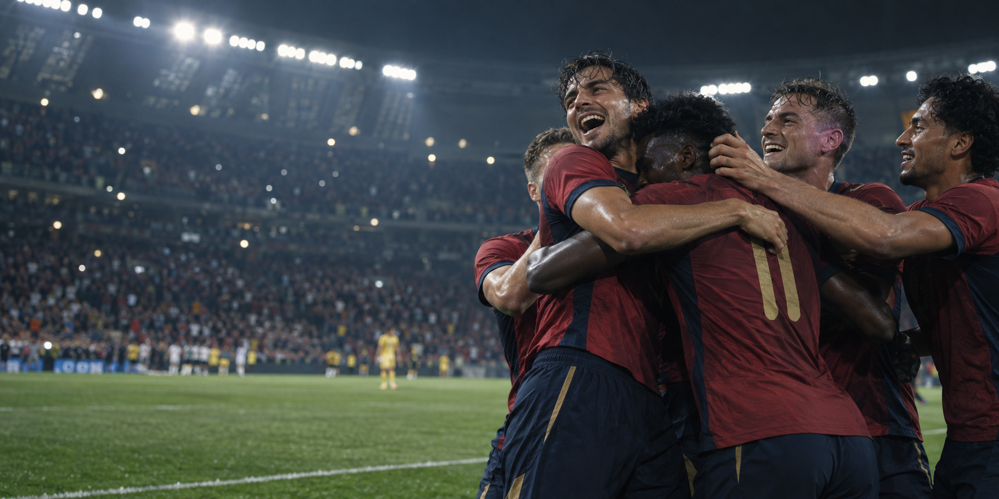

Montevideo
Un torneo concentrado en una ciudad y decidido entre vecinos del Río de la Plata.
Una consulta cronológica de sedes, campeones, subcampeones y resultados decisivos, desde Uruguay 1930 hasta Canadá, México y Estados Unidos 2026.
Cada casilla marca una edición y su campeón; el recorrido avanza como una jugada dibujada sobre el campo, desde 1930 hasta 2026.
| Año | Campeón | Sede | Subcampeón | Resultado decisivo |
|---|---|---|---|---|
| 1930 | Uruguay | Uruguay | Argentina | 4–2 |
| 1934 | Italia | Italia | Checoslovaquia | 2–1 (t. e.) |
| 1938 | Italia | Francia | Hungría | 4–2 |
| 1950 | Uruguay | Brasil | Brasil | 2–1* |
| 1954 | Alemania Federal | Suiza | Hungría | 3–2 |
| 1958 | Brasil | Suecia | Suecia | 5–2 |
| 1962 | Brasil | Chile | Checoslovaquia | 3–1 |
| 1966 | Inglaterra | Inglaterra | Alemania Federal | 4–2 (t. e.) |
| 1970 | Brasil | México | Italia | 4–1 |
| 1974 | Alemania Federal | Alemania Federal | Países Bajos | 2–1 |
| 1978 | Argentina | Argentina | Países Bajos | 3–1 (t. e.) |
| 1982 | Italia | España | Alemania Federal | 3–1 |
| 1986 | Argentina | México | Alemania Federal | 3–2 |
| 1990 | Alemania Federal | Italia | Argentina | 1–0 |
| 1994 | Brasil | Estados Unidos | Italia | 0–0; 3–2 pen. |
| 1998 | Francia | Francia | Brasil | 3–0 |
| 2002 | Brasil | Corea del Sur / Japón | Alemania | 2–0 |
| 2006 | Italia | Alemania | Francia | 1–1; 5–3 pen. |
| 2010 | España | Sudáfrica | Países Bajos | 1–0 (t. e.) |
| 2014 | Alemania | Brasil | Argentina | 1–0 (t. e.) |
| 2018 | Francia | Rusia | Croacia | 4–2 |
| 2022 | Argentina | Catar | Francia | 3–3; 4–2 pen. |
| 2026 | España | Canadá / México / EE. UU. | Argentina | 1–0 (t. e.) |
* En 1950 no hubo una final única: Uruguay venció a Brasil en el último partido del grupo decisivo. “t. e.” indica tiempo extra y “pen.”, tanda de penales.
Un torneo concentrado en una ciudad y decidido entre vecinos del Río de la Plata.
Brasil obtiene definitivamente el antiguo trofeo Jules Rimet al alcanzar su tercer título.
La primera edición asiática y la primera organizada por dos países.
Tres anfitriones, 48 selecciones, 104 partidos y el segundo título de España.

La edición norteamericana amplió el cuadro a 48 selecciones y 104 encuentros. La final se resolvió en la prórroga: España derrotó 1–0 a Argentina y obtuvo su segunda Copa Mundial.
Los datos históricos, resultados y cifras de 2026 se contrastaron con el archivo oficial de FIFA.